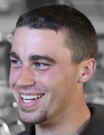

Research Homepage
About

Current
2nd year M.Sc., Computer Science student at McGill University.
Supervised by Joelle Pineau in the Reasoning and Learning Lab.
Member of the SmartWheeler project.
Research interests include robotics, machine learning and computer vision.
Previous
B.A.Sc., Systems Design Engineering, University of Waterloo, 2013.Publications
Conference
A. Leigh, J. Pineau, N. Olmedo and H. Zhang, Person Tracking and Following with 2D Laser Scanners, International Conference on Robotics and Automation (ICRA), Seattle, Washington, USA, 2015. [ pdf ]Code is ready to be released but is unfortunately on hold for at least a couple months to due licensing. If you would like updates on this as it develops, email me at the address below and I notify when we're able to release it.
A. Leigh, A. Wong, D. A. Clausi and P. Fieguth, Comprehensive analysis on the effects of noise estimation strategies on image noise artefact suppression performance, IEEE International Symposium of Multimedia, Dana Point, California, USA, 2011. [ pdf | Google Scholar | bib ]
Workshop
A. Leigh and J. Pineau, Laser-based Person Tracking for Clinical Locomotion Analysis, IROS Workshop on Rehabilitation & Assistive Robotics, Chicago, Illinois, USA, 2014. [ pdf ]Contact
Office
Reasoning and Learning Lab
McConnell Engineering Building, Room 111
3480 University Street
Montreal, Quebec, Canada, H3A 2A7
angusleigh a.t. gmail d.o.t com